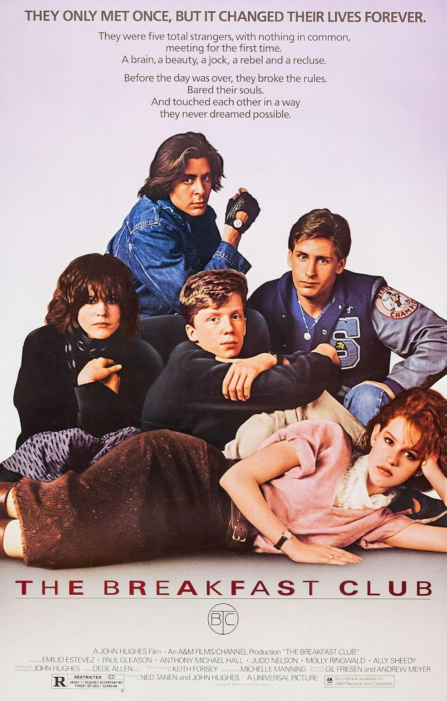
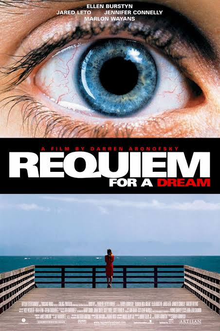

There's 3 sub categories to my favorite movies of all time:
Nostalgic: a movie with sentimental value and impacted my development
Catatonic: a movie that is so strange and dumbfounding that you need to stare at a blank wall for 10 minutes after it's over.
Peak Cinema a movie that is a cinematic masterpiece, it's plot, character development, and cinematography is incomparable to all other movies. It's endlessly rewatchable and makes you wish you could watch it for the first time again.

I watched this movie in 5th grade and it genuinely altered my brain chemistry. Allison was my favorite of the 5 because I related to her the most. This was my main comfort movie as a teen, and everytime I watch it, I get brought back to that period of my life.

This was the ultimate what the fuck movie. I love and hate this movie because the imagery and experience of the characters have stuck in my mind forever. It's a total mind-fuck and it's one of those movies that are unlike anything I've ever watched.
Now I know this is a trilogy and technically counts as 3 movies, but they just continuously get better so I can't separate them. These movies have changed my life in so many ways. I fell in love with Tolkien, I fell in love with the characters, and the actors themselves. Like I have genuinely never looked into cast lists and followed actors individually before watching this movie. I have watched the trilogy over 30 times and have yet to become bored. It's a cinematic masterpiece, it was the birth of high definition motion capture in movies, its practical effects surpass majority of the digital effects, it changed so much for the film industry itself therefore it stands as the best movie ever created because of its personal significance and historical impact.